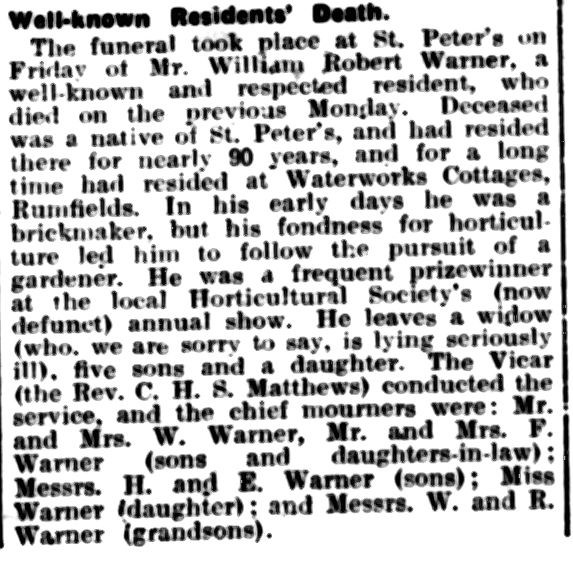
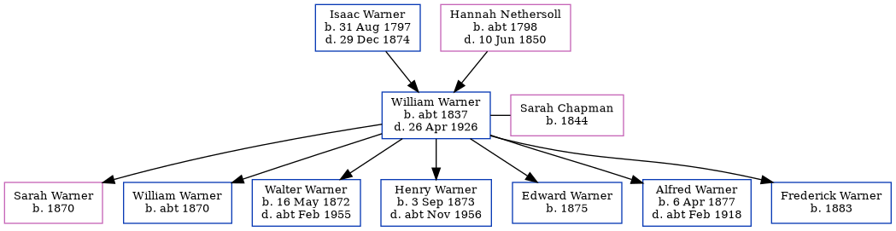

William Robert Warner c1837 - 1926 [ Home ] | [ Calendar ] | [ Surnames Index ] | [ Family History ]A builder's laborer and the child of Isaac Warner (a laborer) and Hannah Nethersoll William Warner , the three times great-uncle of Nigel Horne , was born in St Peters, Thanet, Kent, England c. 18371,2 , was baptized there on Apr 16, 1837 and also married Sarah Chapman (with whom he had 7 children: Sarah Jane , William Jesse , Walter Chapman , Henry John , Edward , Alfred Stephen and Frederick ) there, on Feb 6, 18694 .
William spent all of his life in Kent, England. Throughout his life, he lived in several places around the county: at Callis Court, St Peters, Thanet, Kent, England on Jun 6, 18411 ; at Burtons Cottages, St Peters in Thanet on Apr 3, 18816 ; on Magdala Road, St Peters in Thanet on Apr 5, 18917 ; at Rumfields, St Peters in Thanet on Mar 31, 19012 ; and at Holly Lodge, Rumfields, St Peters in Thanet on Apr 2, 19115 . William appeared in The East Kent Times and District Advertiser on 5 May 1926 on page 007
He died on Apr 26, 1926 in Thanet3 and was buried in St Peters on Apr 30, 1926.
Parents Isaac was born on Aug 31, 1797Hannah was born c. 1798Children Sarah Jane was born in 1870William Jesse was born c. 1870Walter Chapman was born on May 16, 1872Henry John was born on Sep 3, 1873Edward was born in 1875Alfred Stephen was born on Apr 6, 1877Frederick was born in 1883Citations 1841 England, Wales & Scotland Census - Findmypast (was age 4 and the son of the head of the household) 1901 England, Wales & Scotland Census - Findmypast (was age 64 and the head of the household) England & Wales deaths 1837-2007 - Findmypast Kent, Canterbury Archdeaconry marriages 1538-1928 - Findmypast 1911 Census for England & Wales - Findmypast (was age 74 and the head of the household) 1881 England, Wales & Scotland Census - Findmypast (was age 44 and the head of the household) 1891 England, Wales & Scotland Census - Findmypast (was age 54 and the head of the household) Media The_East_Kent_Times_and_Distri_05_May_1926_0007_Cl  England & Wales deaths 1837-2007 - BMD/D/1926/2/AZ/000976/067 1901 England, Wales & Scotland Census - GBC/1901/0007468151 Kent, Canterbury Archdeaconry marriages 1538-1928 - GBPRS/CANT/M/97018712/1 England Marriages 1538-1973 - R_848292441 England & Wales marriages 1837-2008 - BMD/M/1869/1/AZ/000235/239 1911 Census for England & Wales - GBC/1911/RG14/04509/0035/1 1881 England, Wales & Scotland Census - GBC/1881/0004870499 1891 England, Wales & Scotland Census - GBC/1891/0005914437 1841 England, Wales & Scotland Census - GBC/1841/0013965180 Family Tree Map
Generated by ged2site . Last updated on Feb 28, 2025